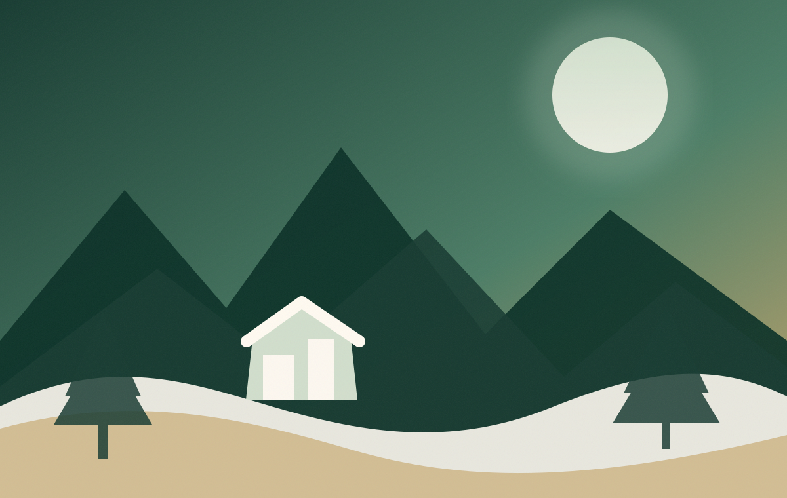

Pendakian Gunung Prau
Informasi jalur, registrasi, persiapan, layanan pendakian, dan kontak basecamp Patakbanteng.
Rencanakan pendakian dengan data terbaru
Status jalur dan ketentuan wajib diperbarui langsung oleh pengelola basecamp.
Pendakian Gunung Prau via Patakbanteng
Peta, pos, dan kondisi jalur
Visual ini merupakan tempat untuk peta jalur resmi. Jangan gunakan peta ilustratif sebagai panduan navigasi lapangan.
| Titik | Estimasi | Kondisi |
|---|---|---|
| Basecamp–Pos 1 | — menit | Perlu survei |
| Pos 1–Pos 2 | — menit | Perlu survei |
| Pos 2–Pos berikutnya | — menit | Perlu survei |
| Menuju puncak | — menit | Perlu pembaruan cuaca |
Harus disusun bersama pengelola, relawan, dan pihak yang berwenang. Informasi lama tidak boleh ditampilkan tanpa tanggal pembaruan.
Perlengkapan, persyaratan, dan keselamatan
Daftar berikut menjadi struktur konten; detail akhirnya mengikuti peraturan basecamp.
Daftar perlengkapan
Jaket, alas kaki, penerangan, perbekalan, perlengkapan tidur, obat pribadi, dan perlengkapan lain sesuai ketentuan.
Persyaratan & peraturan
Identitas, registrasi, batas usia atau kondisi kesehatan, larangan, dan prosedur pendakian.
Informasi keselamatan
Cuaca, kontak darurat, titik pertolongan, prosedur evakuasi, dan anjuran tidak mendaki sendiri.
Layanan yang dapat dihubungi
Pemandu, porter, rental, ojek, dan homestay ditampilkan dengan harga serta kontak terverifikasi.

Basecamp · pemandu · porter · darurat. Semua nomor perlu diverifikasi dan diberi jam pelayanan.